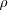
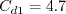
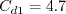

|
Langley Research CenterTurbulence Modeling Resource |
K-kL Turbulence Model
This web page gives detailed information
on the equations for various forms of the
k-kL turbulence model.
All forms of the model given on this page are linear eddy viscosity models.
Linear models use the Boussinesq assumption for the constitutive relation:
Unless otherwise stated, for compressible flow with heat transfer this model is implemented as described on the page
Implementing Turbulence Models into the Compressible RANS Equations, with perfect gas
assumed and Pr = 0.72, Prt = 0.90, and Sutherland's law for dynamic viscosity.
Return to: Turbulence Modeling Resource Home Page K-kL
Model from Menter/Egorov and Abdol-Hamid (k-kL-MEAH2015) and
(k-kL-MEAH2015m)
This version of k-kL is an update of k-kL-MEAH2013.
There are only a few relatively minor differences from the 2013 version.
The reference is:
The two-equation model (written in conservation form) is given by the following:
and the turbulent eddy viscosity is computed from:
Different from k-kL-MEAH-2013, the production term P in both the k and kL equations is limited, and gets replaced by:
The functions are:
where
and  is the density,
A limiter (different from k-kL-MEAH-2013) is applied on with
The boundary conditions for the two turbulence variables k and (kL) at walls are:
Note: the zero BC for k can cause a divide-by-zero if one tries to compute turbulent eddy viscosity
at the wall (with equation given earlier). However, the turbulent eddy viscosity at the wall is identically zero,
so this numerical issue can be bypassed.
Recommended farfield boundary conditions for most applications are:
where a represents the speed of sound.
The constants are:
Note: the K-kL
Model from Menter/Egorov and Abdol-Hamid (k-kL-MEAH2013) and
(k-kL-MEAH2013m)
This version of k-kL derives from three references:
Although the first reference introduced this method, its focus was
primarily on a hybrid model of different form; the second reference fine-tuned
the k-kL version given below. Note that there is some missing information in the second and third
references:
(1) kappa should be given as 0.41, and (2) Cd1 should be given as 4.7 for k-kL.
In the third reference, the following typos are also noted:
(1) eqn 4 should have (p1-2) exponent rather than (p1-1.5),
and (2) parentheses are missing in the diffusion terms.
These have been corrected below.
The compressibility correction factor from the second and third references is not included here.
The two-equation model (written in conservation form) is given by the following:
and the turbulent eddy viscosity is computed from:
The functions are:
where
and is the density,
A limiter is applied on The boundary conditions for the two turbulence variables k and (kL) at walls are:
No specific farfield boundary conditions have been recommended for this model.
The constants are:
When the
Return to: Turbulence Modeling Resource Home Page
Recent significant updates: Responsible NASA Official:
Ethan Vogel

![\frac{\partial (\rho k)}{\partial t} + \frac{\partial (\rho u_j k)}{\partial x_j}
= \cal P - C_{\mu}^{3/4}\rho \frac{k^{5/2}}{(kL)} - 2 \mu \frac{k}{d^2} + \frac{\partial}{\partial x_j}
\left[\left(\mu + \sigma_k \mu_t \right)\frac{\partial k}{\partial x_j}\right]](kkl_eqns/img2.png)


![C_{\phi 1} = \left[ \zeta_1 - \zeta_2 \left( \frac{(kL)}{k L_{vk}} \right)^2 \right]](kkl_eqns/img8.png)


 is the
molecular dynamic viscosity, and d is the distance from the field point to the nearest wall.
Note that if U' = U'' = 0, then the (kL) production term should be identically zero.
is the
molecular dynamic viscosity, and d is the distance from the field point to the nearest wall.
Note that if U' = U'' = 0, then the (kL) production term should be identically zero.
 :
:

![f_p=min\left[ max\left(\frac{\cal P}{\left(C_{\mu}^{3/4} \rho k^{5/2}/(kL) \right)}
, 0.5 \right) , 1.0 \right]](kkl_eqns/img33.png)


 
 term
in the Boussinesq approximation for tau_ij is sometimes ignored in the momentum and energy equations.
Similarly, the production term in two-equation turbulence models is often approximated by P = mu_t S2.
This expression is exact for incompressible flows and is typically
considered a very good approximation, except perhaps for very high Mach number flows (see items 4 and 7 on the page
Notes on Running the Cases with CFD, and the
Implementing Turbulence Models into the Compressible RANS Equations page).
When the
term is ignored in tau_ij in the momentum and energy equations and the production term is approximated by
P = mu_t S2,
a modified naming convention should be employed: (k-kL-MEAH2015m).
term
in the Boussinesq approximation for tau_ij is sometimes ignored in the momentum and energy equations.
Similarly, the production term in two-equation turbulence models is often approximated by P = mu_t S2.
This expression is exact for incompressible flows and is typically
considered a very good approximation, except perhaps for very high Mach number flows (see items 4 and 7 on the page
Notes on Running the Cases with CFD, and the
Implementing Turbulence Models into the Compressible RANS Equations page).
When the
term is ignored in tau_ij in the momentum and energy equations and the production term is approximated by
P = mu_t S2,
a modified naming convention should be employed: (k-kL-MEAH2015m).
is the
molecular dynamic viscosity, and d is the distance from the field point to the nearest wall.
Note that if U' = U'' = 0, then the (kL) production term should be identically zero.
:
term is ignored in tau_ij in the momentum and energy equations and the production term is approximated by
P = mu_t S2,
a modified naming convention should be used: (k-kL-MEAH2013m).
03/24/2021 - clarifications on use of "m" designation when P=mu_t S2 and k term ignored in momentum and energy equations
03/27/2017 - mention how to handle turbulent eddy visocity at walls
06/30/2015 - mention Pr, Pr_t, and Sutherland's law
05/14/2015 - added journal article reference
Page Curator:
Clark Pederson
Last Updated: 11/08/2021